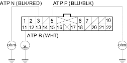
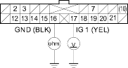

- If the MIL has been reported, check for a DTC and repair the system as indicated by DTC.
- If the MIL does not come on and the A/T gear position indicator
 ,
,  , or R.gif light does not come on, remove the gauge assembly from the dashboard (see page 22-93), then disconnect gauge assembly connector A (22P) and B (22P).
, or R.gif light does not come on, remove the gauge assembly from the dashboard (see page 22-93), then disconnect gauge assembly connector A (22P) and B (22P). - Inspect the connectors and connector terminals to be sure they are making good contact.
- If the terminals are bent, loose, or corroded, repair them as necessary and recheck the system.
- Shift to position and check for continuity between A5 terminal (BLU/BLK) and ground.
There should be continuity inposition and no continuity in any other shift lever position. If your test results are different, check for a faulty transmission range switch or an open in the wire.

- Shift to position and check for continuity between A3 terminal (BLK/RED) and ground.
There should be continuity in position and no continuity in any other shift lever position. If your test results are different, check for a faulty transmission range switch or an open in the wire.
- Turn the ignition switch ON (II), shift to
 position and check for voltage between A11 terminal (WHT) and ground.
position and check for voltage between A11 terminal (WHT) and ground.
There should be 0 V in position. There should be 5 V in any other shift lever position. If your test results are different, check for a faulty transmission range switch or an open in the wire.
- Check for voltage between B17 terminal (YEL) and ground with the ignition switch ON (II).
There should be battery voltage. If your test results are different, check for a blown No. 10 (7.5A) fuse in the under-dash fuse/relay box or an open in the wire.

- Turn the ignition switch OFF and check for continuity between B16 terminal (BLK) and ground under all conditions.
There should be continuity. If your test results are different, check for a poor ground (G501: 4-door, G502: 5-door) or an open in the wire.
- If all input tests prove OK, but the indicator is faulty, replace the printed circuit board.